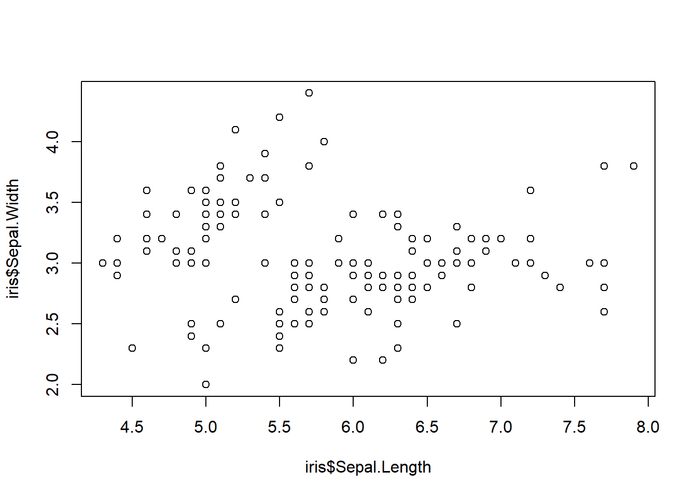
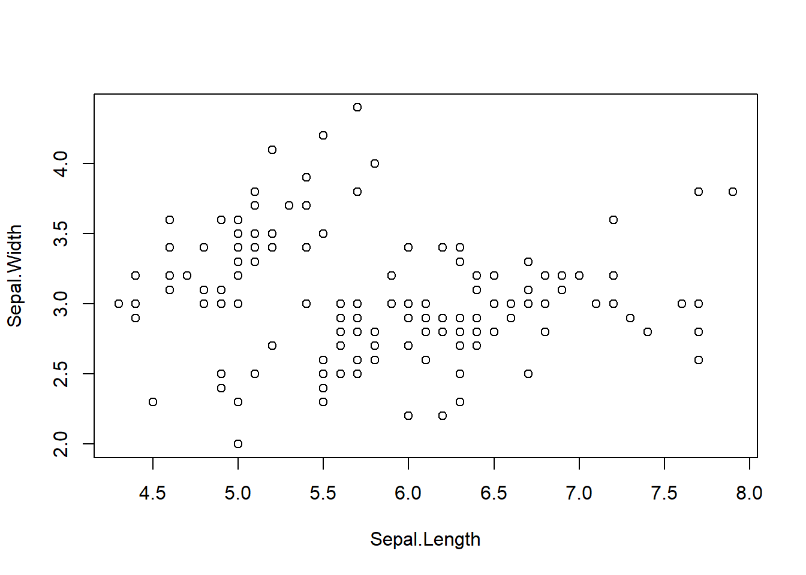
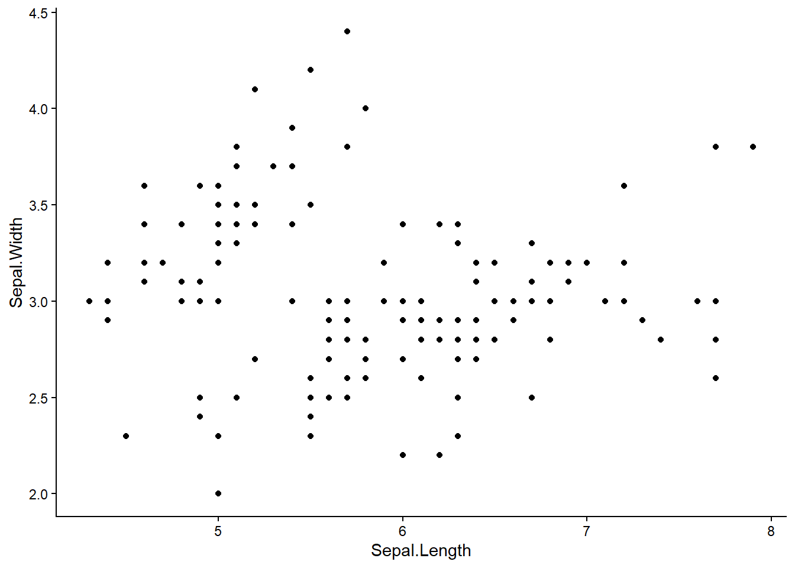
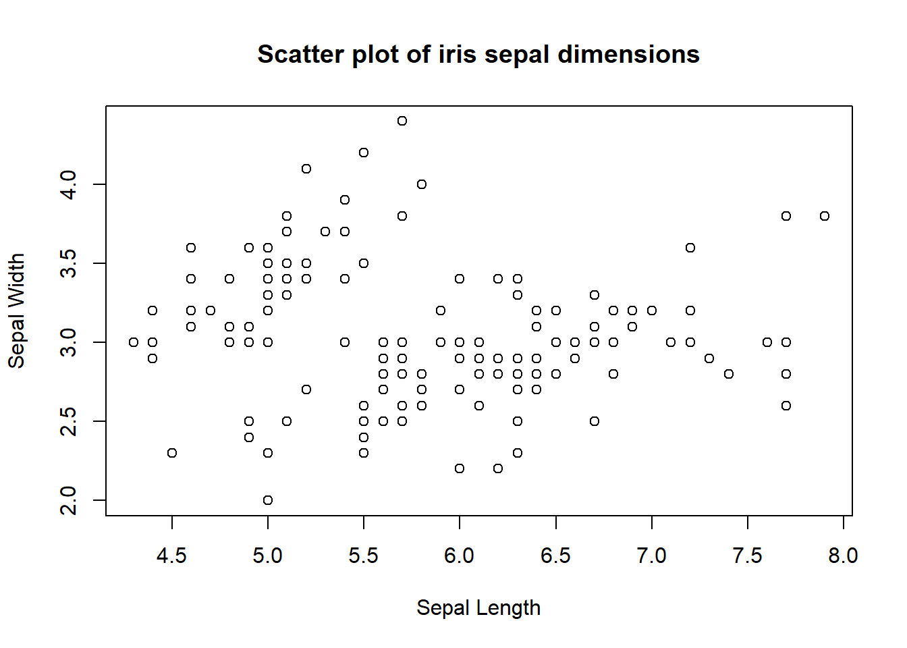
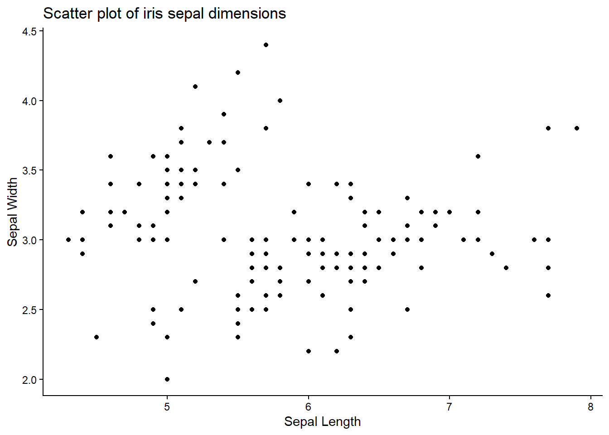
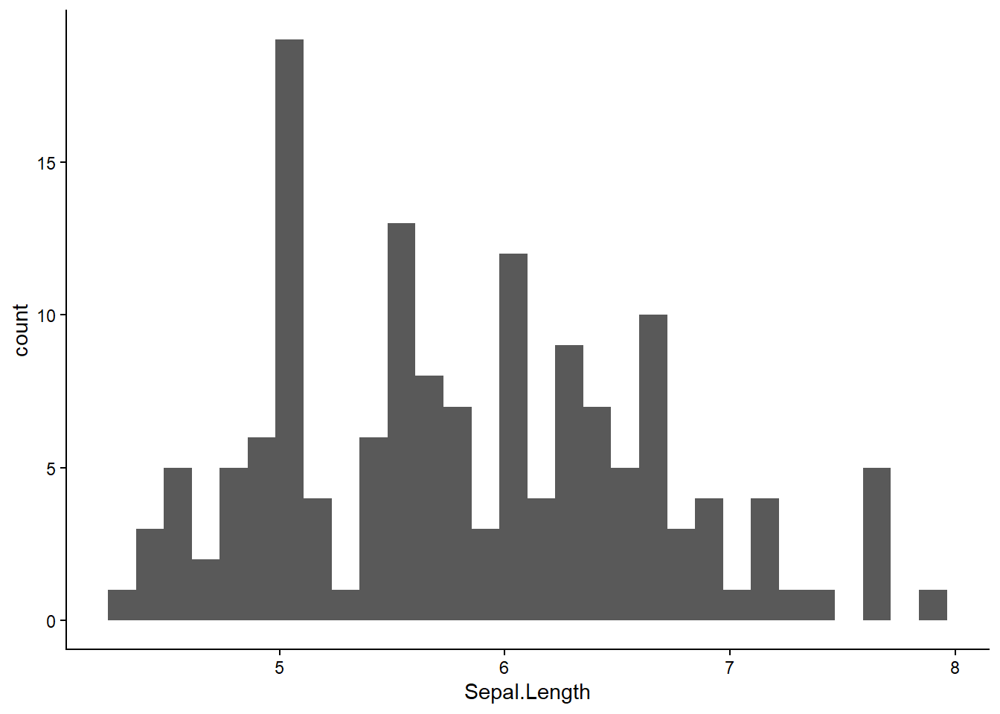
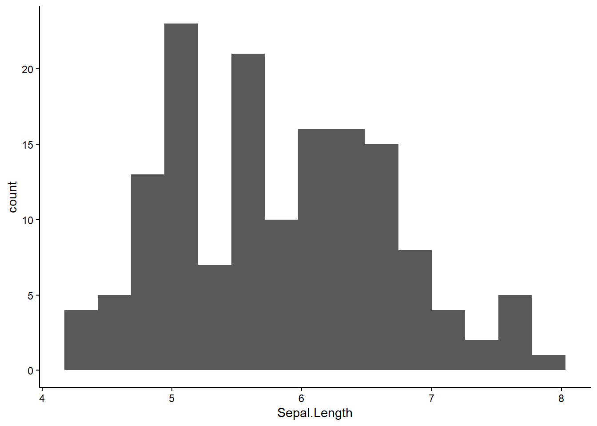
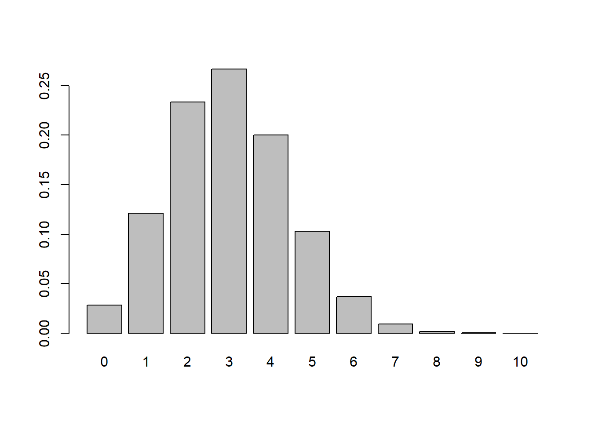
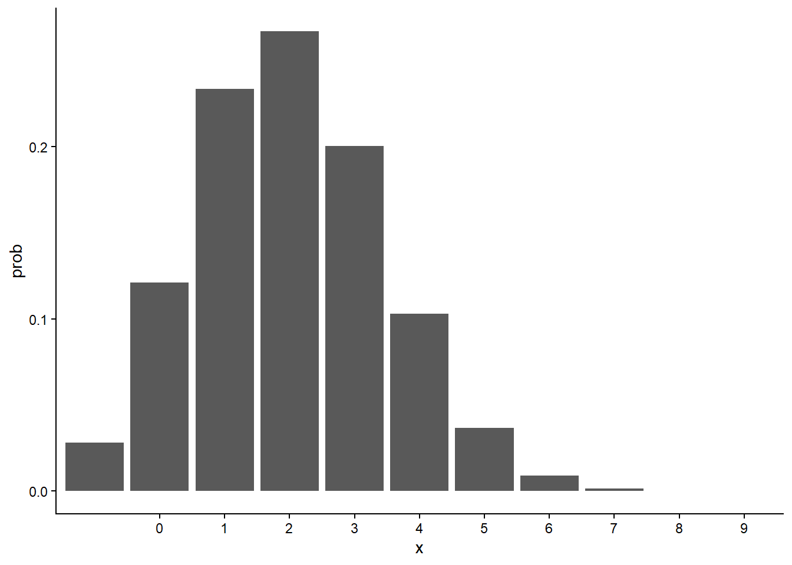
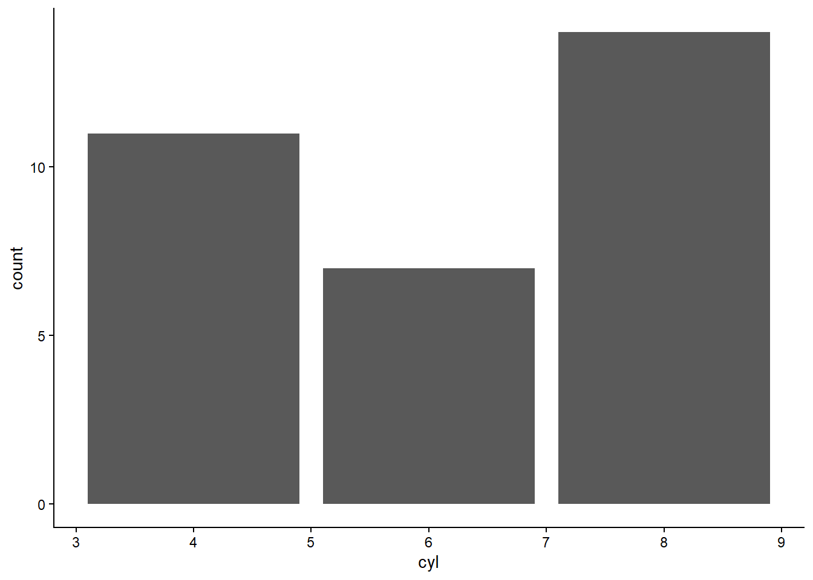

R Basics
Objects & Functions
In R, information is stored as objects. For our purposes, there are three main structures for storing data. These vary in the number of dimensions and in how many types of variables they can store. We name objects and assign a data structure to that name. This takes the form:
# objectName <- dataStructureFunctions perform operations on objects. They have names, like objects, but the function name is followed by brackets: function(). Functions often have arguments that must be specified. For example, the function mean() must be provided with data to calculate the mean of.
R will interpret any unquoted text followed by brackets as a function, and any unquoted text as an object name.
Data Structures
Vectors
Vectors are one dimensional and are made up of a sequence of elements. Each element stores one value. All values within a vector must be the same data type (e.g., numeric, character, logical, etc). There are several ways to create a vector.
Here are some numeric vectors:
Here are some character and logical vectors:
There are several useful functions for identifying characteristics of a vector:
length(vec_a) # how many elements?[1] 3class(vec_b) # what type of data?[1] "integer"str(vec_e) # what is the structure? logi [1:3] TRUE FALSE FALSEAll values within a vector must be the same type. If you try to mix data types, R will convert them to a single type.
Matrices
Matrices are similar to vectors, but are two dimensional. They have rows and columns. They can be created using the function matrix().
mx_A <- matrix(1:8, nrow=4, ncol=2)
mx_A [,1] [,2]
[1,] 1 5
[2,] 2 6
[3,] 3 7
[4,] 4 8str(mx_A) int [1:4, 1:2] 1 2 3 4 5 6 7 8 [,1] [,2]
[1,] "A" "C"
[2,] "B" "D" str(mx_B) chr [1:2, 1:2] "A" "B" "C" "D"Like vectors, all data must be the same type.
Data frames
Data frames are the most commonly used data structure by most users. They are two dimensional, but each column can be a different data type. They can be created directly using data.frame() or by loading data from external sources with functions like read.csv() or read_excel().
# columnName = vectorOfData
df_A <- data.frame(columnA=1:3,
columnB=c("A", "B", "C"),
columnC=c(T, F, F))
df_A columnA columnB columnC
1 1 A TRUE
2 2 B FALSE
3 3 C FALSEstr(df_A)'data.frame': 3 obs. of 3 variables:
$ columnA: int 1 2 3
$ columnB: chr "A" "B" "C"
$ columnC: logi TRUE FALSE FALSEMatrices and data frames must be rectangular: all columns have the same number of rows.
Accessing data
We typically perform operations on specific parts of our data. For example, we might calculate the mean of one variable, create a plot of one variable against another, or simply wish to view particular data points. Accessing parts of our data is called extracting or subsetting, and the method depends on the data structure.
Vectors
R organizes information using indexed elements. Indexes identify which element is which, starting at 1 for the first, and counting upward.
To extract a particular element from a vector, we specify that element’s index in square brackets.
vec_a[1] 1 4 6vec_a[1][1] 1vec_a[3][1] 6To extract multiple elements, we can use a vector of indexes
Matrices
Extracting values from matrices is identical as for vectors, but requires the row index and column index since there are two dimensions.
mx_A [,1] [,2]
[1,] 1 5
[2,] 2 6
[3,] 3 7
[4,] 4 8mx_A[2, 1] # [rows, columns][1] 2mx_A[1:2, 2][1] 5 6If we do not specify the rows or the columns, R will return all of them.
mx_A[1, ] # row 1, do not specify columns[1] 1 5mx_A[ , 1] # column 1, do not specify rows[1] 1 2 3 4Data frames
Square brackets work for data frames identically to matrices. An additional method for data frames is to use the column names to extract a single column. Columns are accessed using $ with the syntax dataframeName$columnName.
df_A columnA columnB columnC
1 1 A TRUE
2 2 B FALSE
3 3 C FALSEdf_A$columnA[1] 1 2 3df_A$columnB[1] "A" "B" "C"Note that this returns a vector with the column contents. These can be extracted as above.
df_A$columnB[2:3][1] "B" "C"Logic and relational statements
We often wish to compare values. R has several operators (a type of function) for making comparisons that return TRUE or FALSE:
-
==: equal to -
!=: not equal to -
>: greater than -
>=: greater than or equal to -
<: less than -
<=: less than or equal to -
|: or
These can be used with any data structure.
vec_b[1] 12 13 14 15vec_b == 13[1] FALSE TRUE FALSE FALSEvec_c[1] 1 3 5 7 9 11 13 15vec_c <= 5[1] TRUE TRUE TRUE FALSE FALSE FALSE FALSE FALSEvec_d[1] "Site A" "Site B"vec_d == "Site A"[1] TRUE FALSEvec_d != "Site A"[1] FALSE TRUEThese statements are often useful for subsetting data, since a logical vector (TRUE/FALSE) can be used inside square brackets to specify which elements should be extracted.
vec_c[1] 1 3 5 7 9 11 13 15vec_c <= 5[1] TRUE TRUE TRUE FALSE FALSE FALSE FALSE FALSEvec_c[vec_c <= 5][1] 1 3 5And for 2D objects like data frames, we can use a logical vector to identify which rows we’d like, and then state which columns to keep.
df_A columnA columnB columnC
1 1 A TRUE
2 2 B FALSE
3 3 C FALSEdf_A$columnB[df_A$columnB == "C"][1] "C"df_A[df_A$columnB == "C", ] # specify rows, do not specify columns columnA columnB columnC
3 3 C FALSEdf_A[df_A$columnB == "C", 1:2] # specify rows, specify columns columnA columnB
3 3 CNote that these objects never actually changed because we never assigned the output (using <-). To store the output of an operation, you can overwrite the original object or create a new object:
vec_x <- 1:5
vec_x2 <- vec_x[3:5] # store as a new object; vec_x is unchanged
vec_x <- vec_x[4:5] # overwrite; vec_x is now length 2Plotting
Scatter plots
To make a scatter plot of two continuous variables, we can use either plot() or ggplot(). Further, there are two different approaches for plot().
For illustration, we’ll plot Sepal.Length on the x-axis and Sepal.Width on the y-axis.
head(iris) Sepal.Length Sepal.Width Petal.Length Petal.Width Species
1 5.1 3.5 1.4 0.2 setosa
2 4.9 3.0 1.4 0.2 setosa
3 4.7 3.2 1.3 0.2 setosa
4 4.6 3.1 1.5 0.2 setosa
5 5.0 3.6 1.4 0.2 setosa
6 5.4 3.9 1.7 0.4 setosa# plot(x_vector, y_vector)
plot(iris$Sepal.Length, iris$Sepal.Width)
# plot(y_column ~ x_column, data=dataframe_name)
plot(Sepal.Width ~ Sepal.Length, data=iris)
ggplot(iris, aes(x=Sepal.Length, y=Sepal.Width)) +
geom_point()
plot() is convenient for simple plots, but adding extra detail is often easier with ggplot(). Axis labels and titles can be added to each.
plot(Sepal.Width ~ Sepal.Length, data=iris,
xlab="Sepal Length", ylab="Sepal Width",
main="Scatter plot of iris sepal dimensions")
ggplot(iris, aes(x=Sepal.Length, y=Sepal.Width)) +
geom_point() +
labs(x="Sepal Length",
y="Sepal Width",
title="Scatter plot of iris sepal dimensions")
Histograms
Histograms are a common way to visualize the distribution of a continuous variable. We can use hist() or ggplot(). Note that these have different defaults for bin width, which should always be explored a bit anyway.

ggplot(iris, aes(Sepal.Length)) +
geom_histogram()
ggplot(iris, aes(Sepal.Length)) +
geom_histogram(bins=15)
Bar plots
Bar plots visualize discrete distributions. They show the frequency of observations for each possible value. They are suited for discrete variables (e.g., counts), ordinal variables, or categorical variables.
The barplot() function and ggplot() equivalent are somewhat different in this case. barplot() requires a vector of bar heights and an optional vector of names using the names.arg= argument.
binom_prob_df <- data.frame(x=0:10) |>
mutate(prob=dbinom(x, size=10, prob=0.3))
barplot(binom_prob_df$prob, names.arg=binom_prob_df$x)
With ggplot(), we can use bar heights as above, but need to specify stat="identity" so that geom_bar() does not calculate any summary statistics. By default, geom_bar() automatically counts the number of observations.
To make the x-axis a little prettier, we can add on an additional function.
ggplot(binom_prob_df, aes(x=x, y=prob)) +
geom_bar(stat="identity") +
scale_x_discrete(limits=0:10)
If we have recorded a suitable variable, geom_bar() can produce a plot of the frequencies:
head(mtcars) mpg cyl disp hp drat wt qsec vs am gear carb
Mazda RX4 21.0 6 160 110 3.90 2.620 16.46 0 1 4 4
Mazda RX4 Wag 21.0 6 160 110 3.90 2.875 17.02 0 1 4 4
Datsun 710 22.8 4 108 93 3.85 2.320 18.61 1 1 4 1
Hornet 4 Drive 21.4 6 258 110 3.08 3.215 19.44 1 0 3 1
Hornet Sportabout 18.7 8 360 175 3.15 3.440 17.02 0 0 3 2
Valiant 18.1 6 225 105 2.76 3.460 20.22 1 0 3 1
There are many, many, many variations possible. See the tidyverse tutorial for a start, or explore the online documentation for ggplot2.